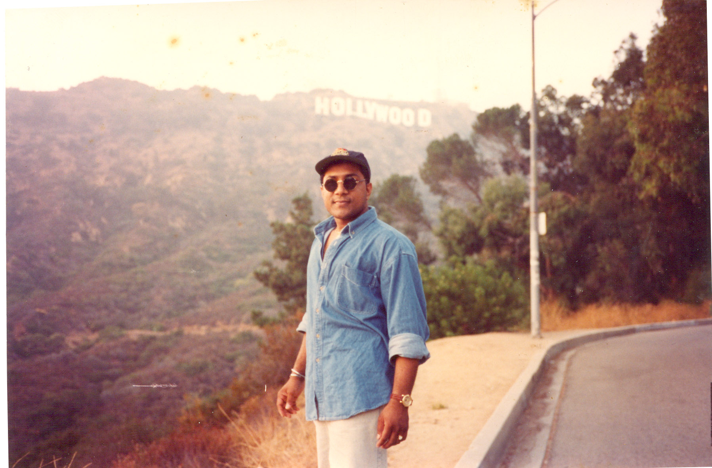
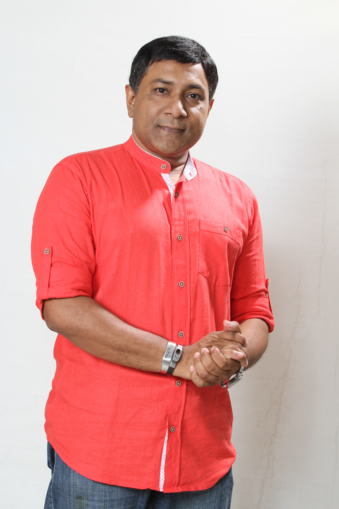
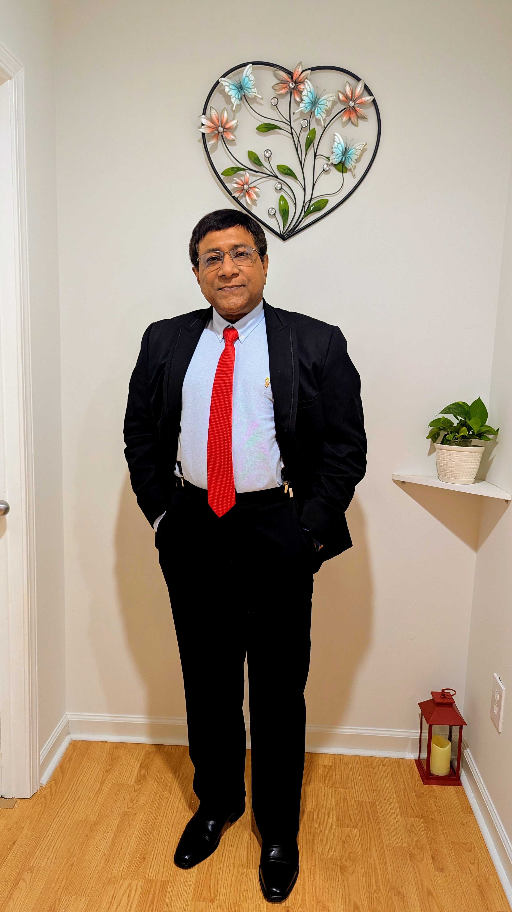
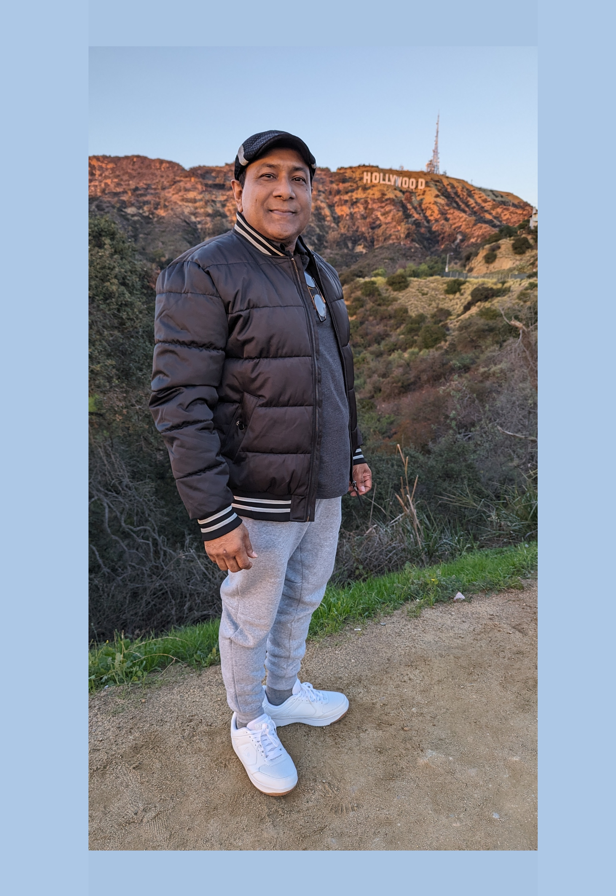

About Me
Born in Entaz Manzil, Barishal, Bangladesh, Mohammed Hossain Jaimy’s journey to the silver screen began with a move to Dhaka for college, where his exceptional academic results set the stage for a groundbreaking career. As the first in his family to move to America, he studied in Kansas before heading to Hollywood to graduate with a degree in Film from Columbia College. Upon returning to Bangladesh, he got married and immediately threw himself into the industry, producing and directing over 20 television shows and 7 full-length feature films.
A true powerhouse in South Asian cinema, Jaimy’s influence spans far beyond the director's chair. He is an award-winning cinematographer, a published author, and a dedicated university lecturer who has mentored the next generation of filmmakers. His expertise in digital cinema has taken him across the globe—from acting as a Line Producer for major international biopics like Mujib: The Making of a Nation (produced by the Governments of Bangladesh and India) to consulting on digital cinema post-production in Bangkok, Thailand. Whether he is writing scripts, managing film distribution, or behind the lens capturing a frame, his relentless passion for storytelling continues to shape the film industry.
আমার সম্পর্কে
বাংলাদেশের বরিশালের এনতাজ মঞ্জিলে জন্মগ্রহণকারী মোহাম্মদ হোসেন জেমির রূপালী পর্দায় আগমন শুরু হয়েছিল কলেজে পড়ার জন্য ঢাকায় আসার মাধ্যমে, যেখানে তার অসাধারণ একাডেমিক ফলাফল একটি যুগান্তকারী ক্যারিয়ারের ভিত্তি তৈরি করেছিল। তার পরিবারের প্রথম সদস্য হিসেবে যিনি আমেরিকায় পাড়ি জমান, তিনি কানসাসে পড়াশোনা করার পর হলিউডে গিয়ে কলাম্বিয়া কলেজ থেকে ফিল্মে গ্র্যাজুয়েট ডিগ্রি অর্জন করেন। বাংলাদেশে ফিরে তিনি বিবাহ বন্ধনে আবদ্ধ হন এবং অবিলম্বে শিল্পে নিজেকে নিমজ্জিত করেন, ২০টিরও বেশি টেলিভিশন শো এবং ৭টি পূর্ণদৈর্ঘ্য পূর্ণদৈর্ঘ্য চলচ্চিত্র প্রযোজনা ও পরিচালনা করেন।
দক্ষিণ এশিয়ার সিনেমায় একজন প্রকৃত শক্তিশালী ব্যক্তিত্ব হিসেবে, জেমির প্রভাব পরিচালকের চেয়ার ছাড়িয়ে অনেক দূর পর্যন্ত বিস্তৃত। তিনি একজন পুরস্কারপ্রাপ্ত সিনেমাটোগ্রাফার, প্রকাশিত লেখক এবং একজন নিবেদিতপ্রাণ বিশ্ববিদ্যালয়ের প্রভাষক যিনি পরবর্তী প্রজন্মের চলচ্চিত্র নির্মাতাদের পথ দেখিয়েছেন। ডিজিটাল সিনেমায় তার দক্ষতা তাকে বিশ্বজুড়ে নিয়ে গেছে—যেমন মুজিব: একটি জাতির রূপকার (বাংলাদেশ ও ভারত সরকারের যৌথ প্রযোজনা) এর মতো প্রধান আন্তর্জাতিক বায়োপিকের লাইন প্রযোজক হিসেবে কাজ করা থেকে শুরু করে থাইল্যান্ডের ব্যাংককে ডিজিটাল সিনেমা পোস্ট-প্রোডাকশনে পরামর্শ দেওয়া পর্যন্ত। তিনি স্ক্রিপ্ট লেখেন, চলচ্চিত্র বিতরণ পরিচালনা করেন, কিংবা ক্যামেরার পেছনে থেকে একটি ফ্রেম ধারণ করেন—গল্প বলার প্রতি তার নিরলস আবেগ চলচ্চিত্র শিল্পকে গড়ে তুলছে।


